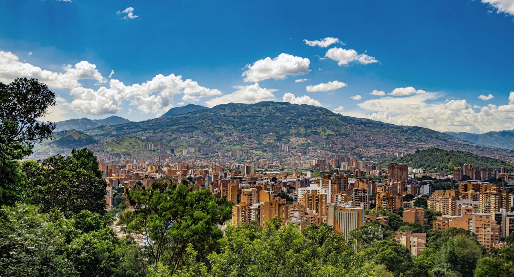

Una plataforma informativa para conocer la problemática de inseguridad en Medellín y promover la prevención ciudadana.

Medellín es la capital del departamento de Antioquia, Colombia. Se encuentra en el Valle de Aburrá y es un centro importante de comercio, turismo, educación, tecnología e industria.
La seguridad ciudadana es importante para proteger la vida, la integridad y los bienes de las personas, además de promover una convivencia tranquila en los barrios y espacios públicos.
La información puede ayudar a comprender los principales factores relacionados con la inseguridad y fomentar comportamientos preventivos.
Conoce algunas medidas que pueden contribuir a mejorar la seguridad personal y comunitaria.
Consulta estadísticas y datos generales relacionados con la seguridad de Medellín.
Explora información general sobre las diferentes zonas de la ciudad.